Rodina
Mám úžasnú manželku, ktorú som spoznal pri tanci. Máme dve deti, ktoré ma nikdy nevideli piť ani sa motať domov z krčmy.
O mne · čistý a šťastný už 12 rokov

Odkiaľ to meno
Vzniklo to ako slovná hračka niekde vonku s kamarátmi, no rýchlo sa z toho stal príbeh. Roky ma závislosť držala v zajatí, až prišiel čas, keď mi iní pomohli vstať. Dnes som ja ten, kto pomáha tebe postaviť sa jej zoči-voči.
Závislosť je obrovské čierne monštrum s neuveriteľnou silou, lenže má jeden problém: silu má len nad tými, ktorí jej ju dali. Len dovtedy, kým jej ju nevezmú z rúk. Ona pritom využije celý svet a urobí všetko, čo môže, aby ťa dostala späť. Musíš byť neuveriteľne silný a dôsledný, no dá sa to. Ja som taký nebol, ale stal som sa ním. Preto som Kapitán Abstinencia.
Často si myslíme, že jeden pohárik, joint alebo hra neuškodia a že sme po nich veselší a odvážnejší. Presne takto závislosť funguje: silu nám naoko dá, no keď príde čas platiť, vezme si veľmi vysokú cenu, niekedy až cenu života. Aj ja som jej platil roky, dokonca ešte dlho po liečení. Dnes stojíme proti sebe, ja sa jej už nebojím a ona to vie.
Kedysi pomohlo veľa ľudí mne a teraz si na rade ty. Pomôžem ti postaviť sa jej a spolu to zvládneme, lebo život je kolobeh a ja mu vraciam to, čo mi dal.
Kapitán Abstinencia na Instagrame
@kapitan_abstinenciaVtedy
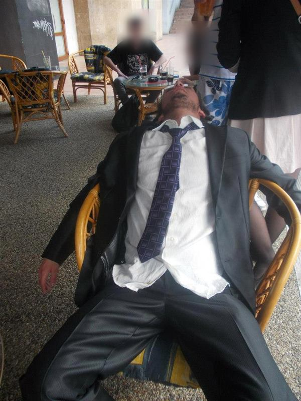
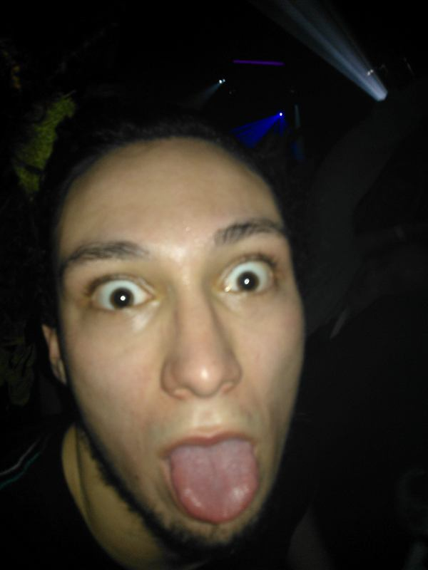
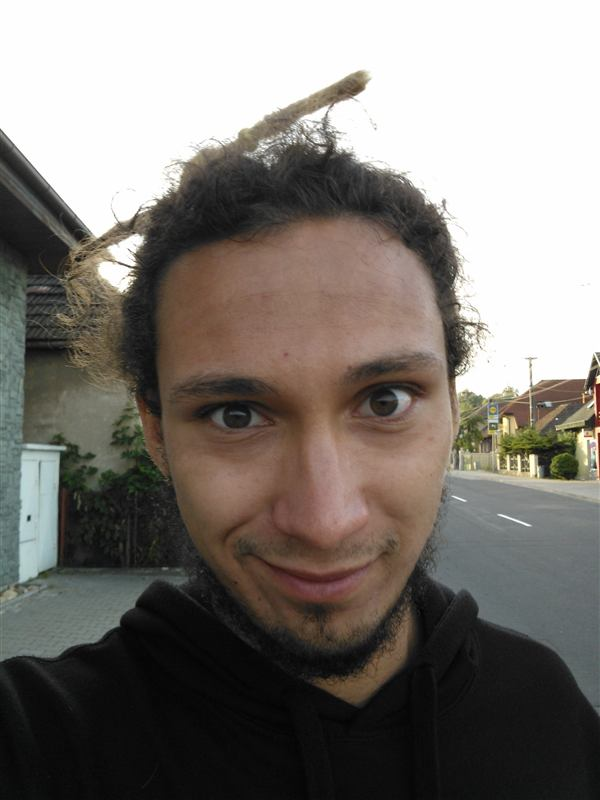
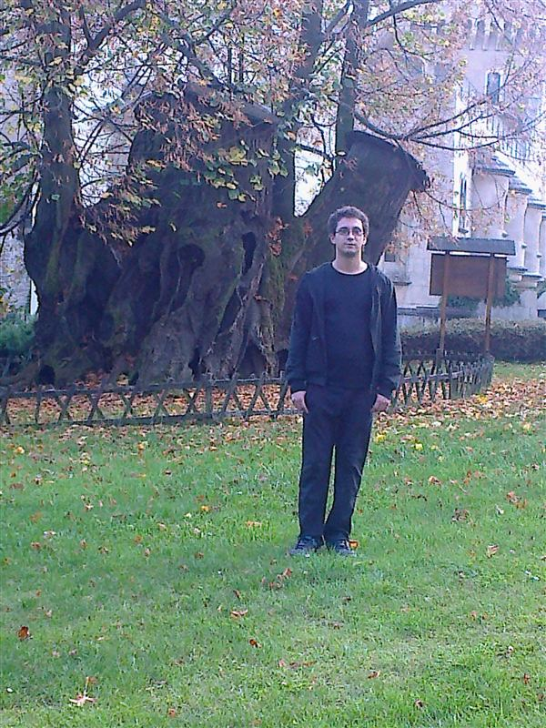
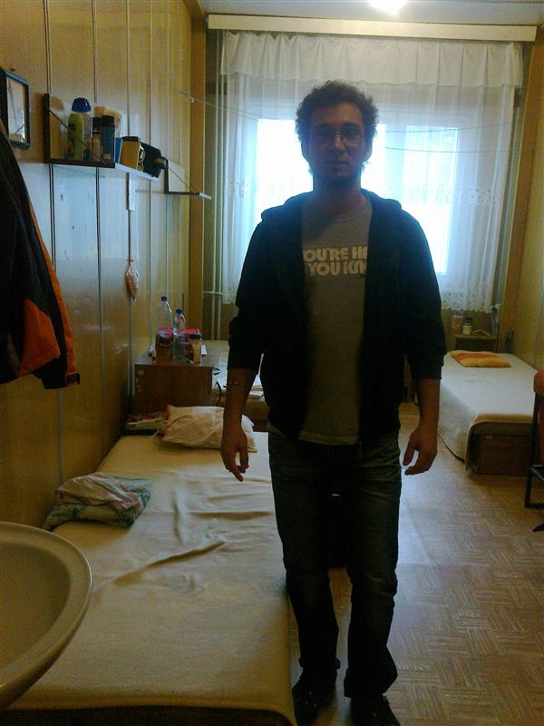
Medzi tým
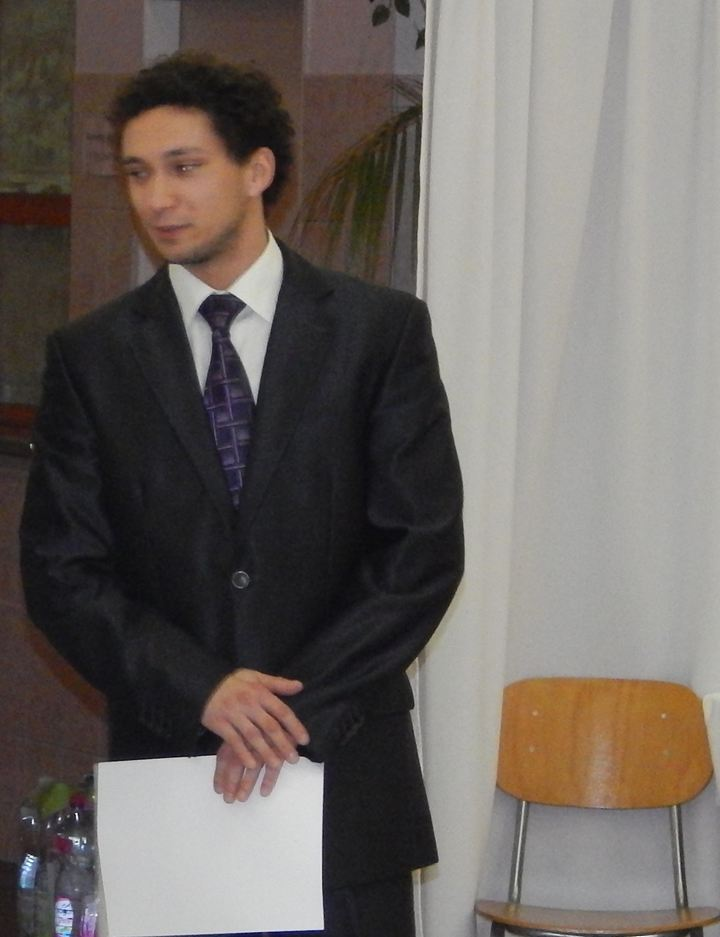
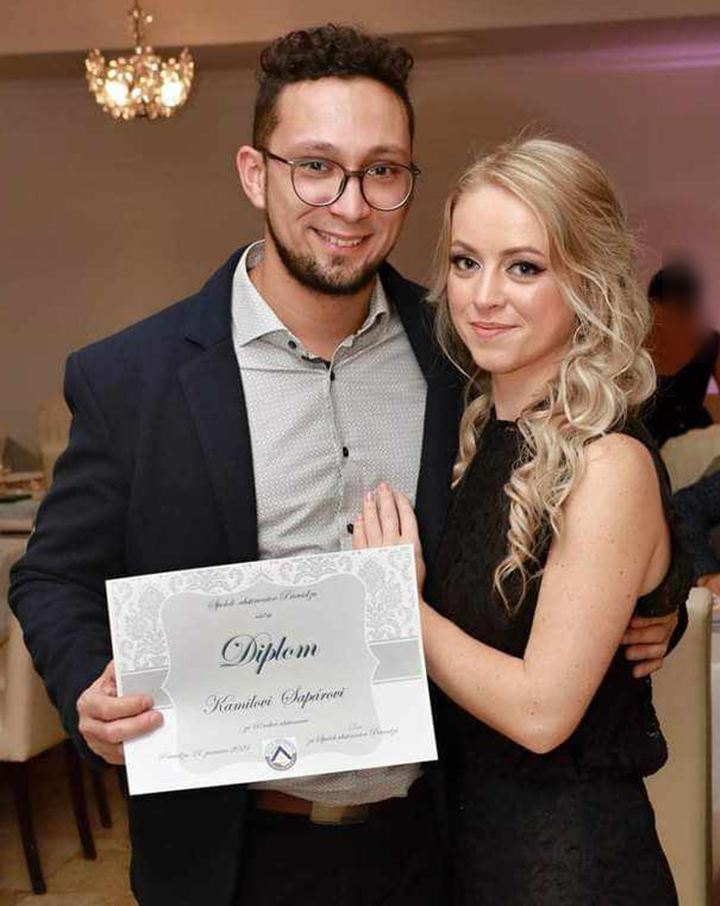
Dnes
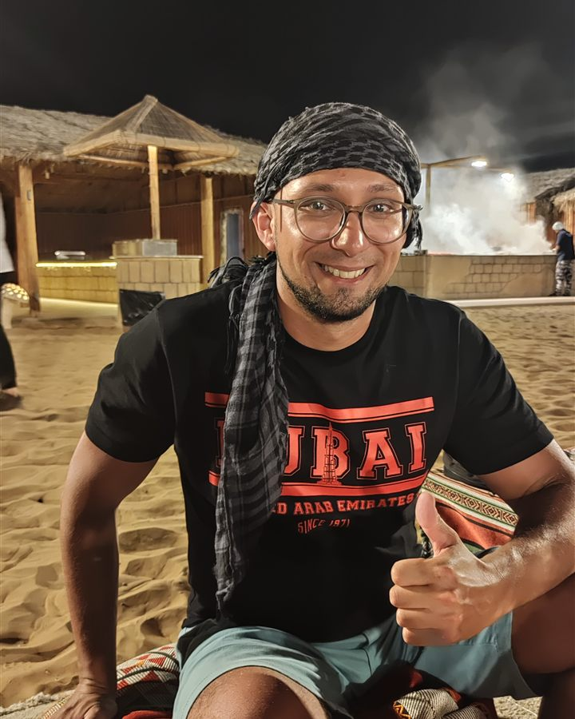
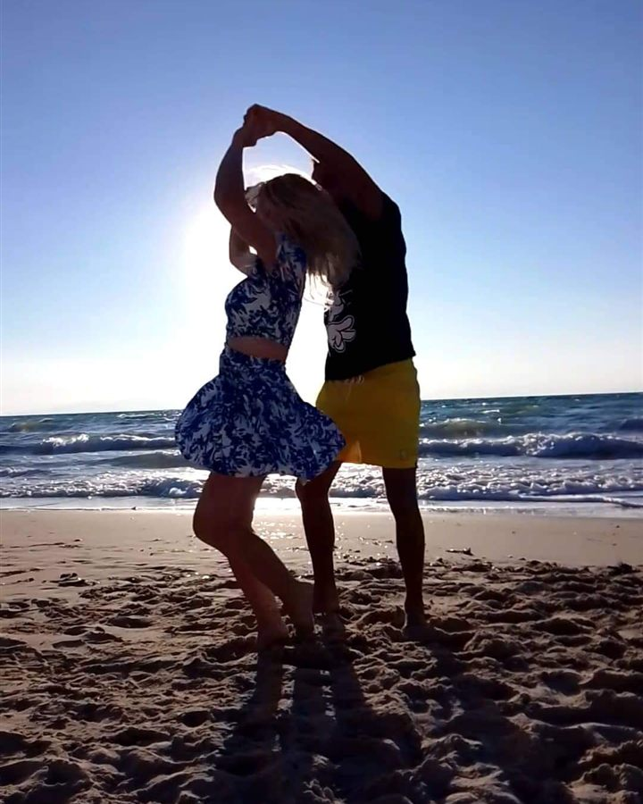
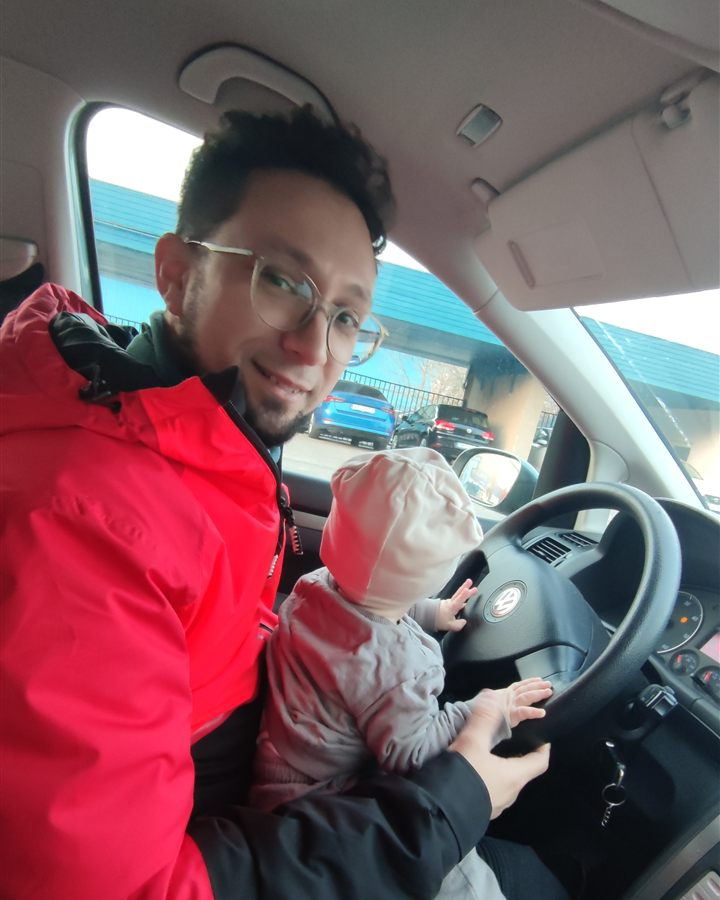
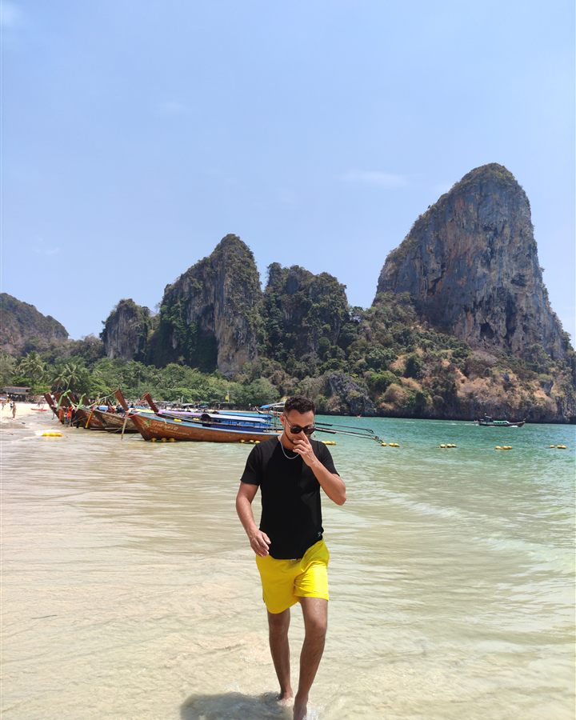
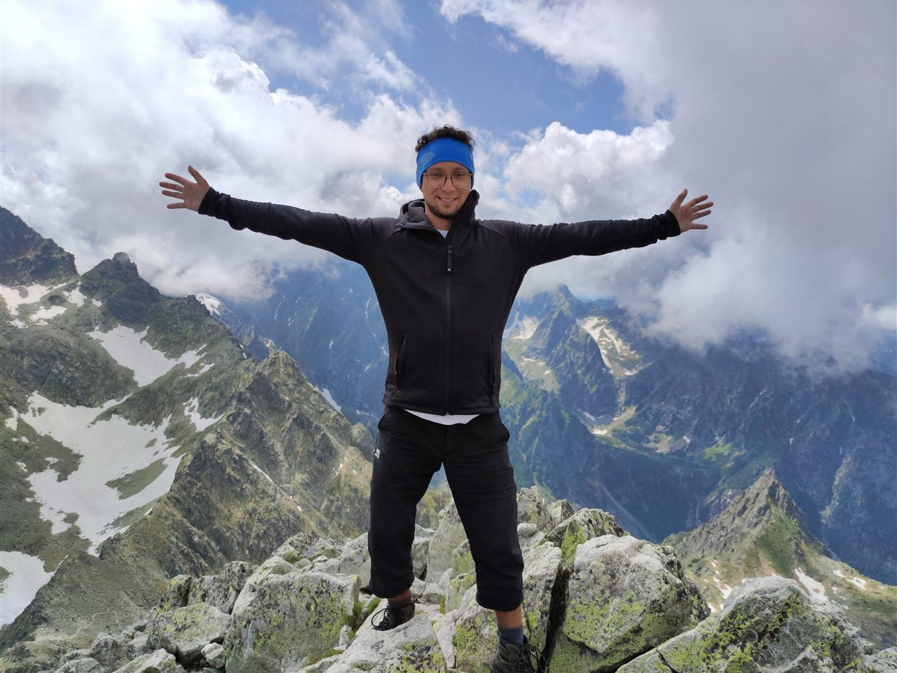
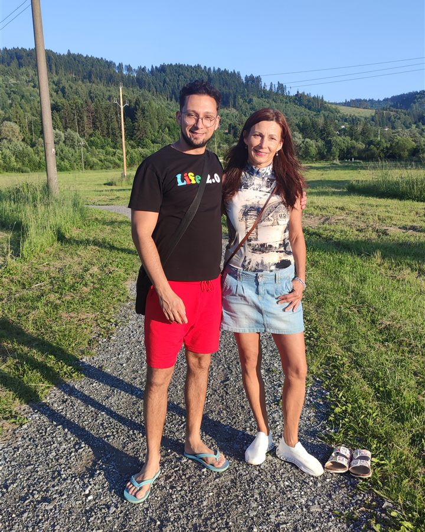
Mám úžasnú manželku, ktorú som spoznal pri tanci. Máme dve deti, ktoré ma nikdy nevideli piť ani sa motať domov z krčmy.
Vytrpela si toho so mnou najviac. Dala mi život dvakrát. Prvý raz, keď som sa narodil, druhý raz, keď ma poslala na liečenie. Dnes máme skvelý vzťah.
Tancujem, cestujem, chodím do hôr a skúšam nové veci, od jogy až po prechod cez žeravé uhlíky.
Myslel som si, že bez drogy umriem od nudy. Doteraz som sa nestihol nudiť. Robím veci jednoducho a so srandou, lebo smutných abstinentov je už dosť.
Nič z tohto by som nemal, keby som vtedy neodbočil správnym smerom. Smerom k abstinencii.
S čím pomáham
Závislosť je jedna, len má viacero podôb, či je to alkohol, drogy, lieky, gambling alebo porno. Preto nehovorím o látke, ale o človeku.
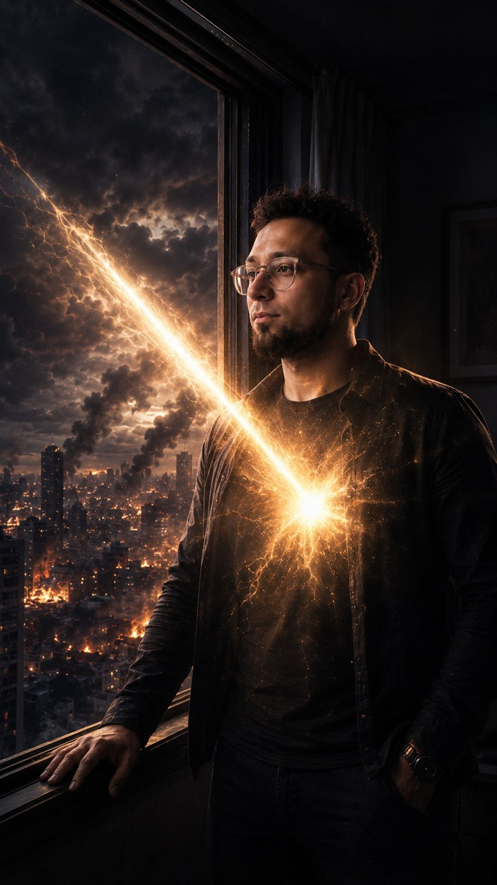
Rozprávam svoj príbeh bez prikrášľovania, aby si videl, že sa to dá. Od niekoho, kto bol tam, kde si teraz ty.
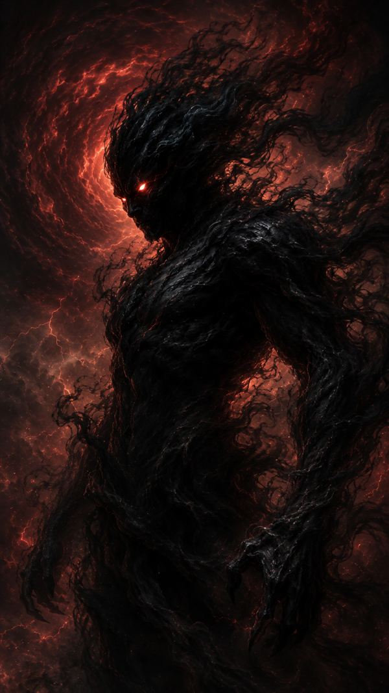
Hovorím aj o tom, čo bolí, teda o chutiach, recidíve aj hanbe. Bez strašenia ti ukážem, že chuť príde a prejde, keď máš plán.
Dám ti praktické kroky na každý deň. Keď treba viac, nasmerujem ťa na odborníkov.
Ilustrácie
Ideš do toho?
12 týždňov, jeden denník a komunita, ktorá ťa podrží. Prvých 30 ľudí má zľavu 30%.
Kontakt
Napíš mi alebo ma sleduj na sociálnych sieťach.
Dôležité
„Táto výzva nenahrádza odbornú liečbu, ale je bezpečným miestom pre každého, kto chce urobiť prvý krok.“